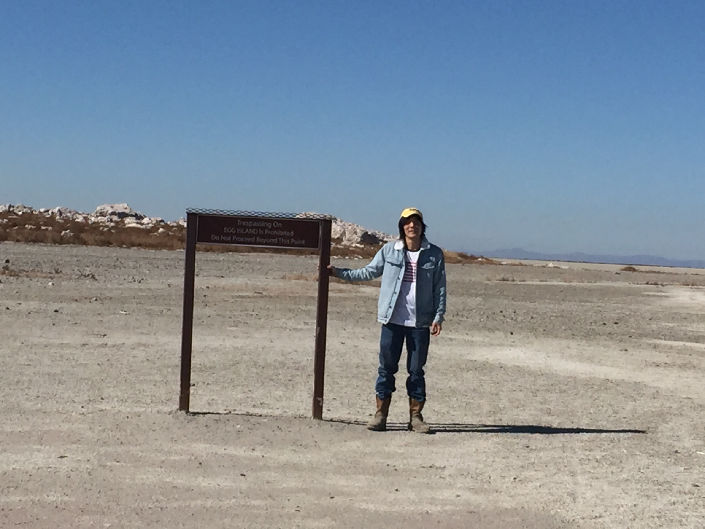

I am a programmer living in Texas. I have previously lived in Ohio, Kansas, L.A., Toronto, Japan, and China. This is my broadcast onto the great cyber interwebs.
Telegram: larryxz
I made a game in 2011: Prelude
Biking across Japan blog: On the Heels of Sakura
